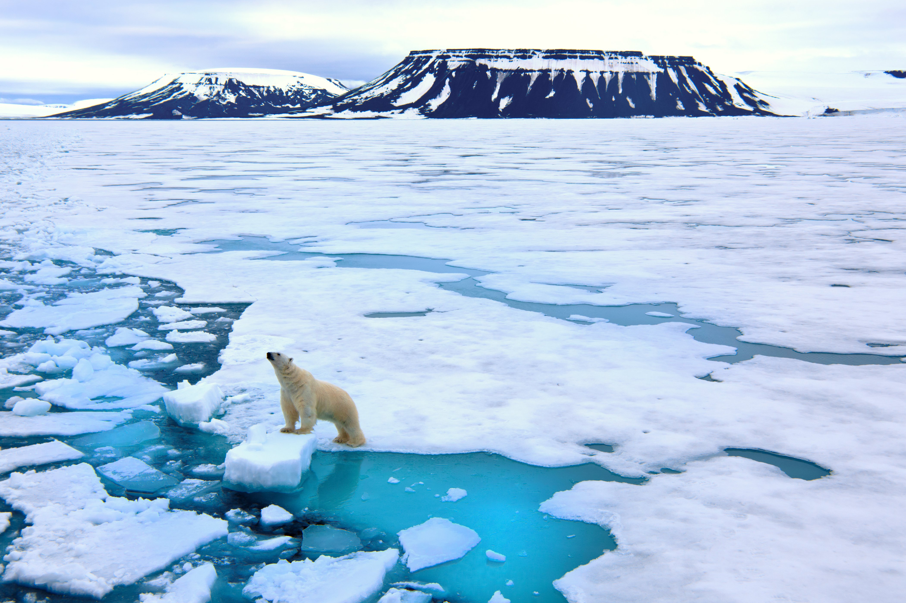
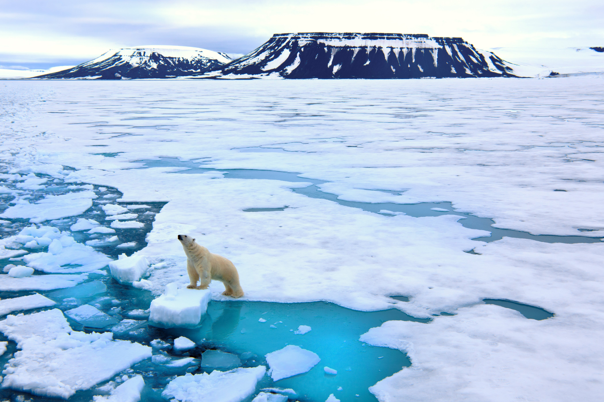

Carbon Dioxide
Greenhouse gases such as carbon dioxide and methane are being absorbed by the atmosphere and warming our earth. On the diet page you can see how the meat industry contributes greatly to CO2 and methane pollution, but what are the effects we are seeing due to pollution.
Effects of CO2 pollution on the ocean
one of the major effects is ocean acidification. When CO2 mixes with H2O it forms CaCO3 which is the chemical compound that many animal skeletons (i.e. hermit crabs) are made of. Coral reef polyps, which are home to many marine animals are also being killed due to the increased acidity of the ocean.
The Overlap!
Everything in the earth’s ecosystem has a chain reaction and effect and while it might seem far fetched that changing one’s diet will have an impact on the coral reefs in the ocean, it is really true!
Effects of Pollution
 
